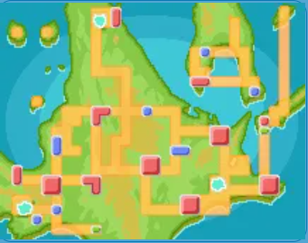
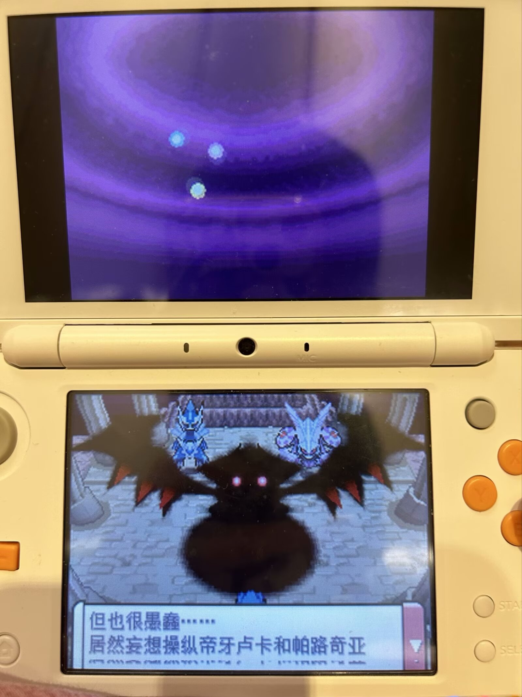
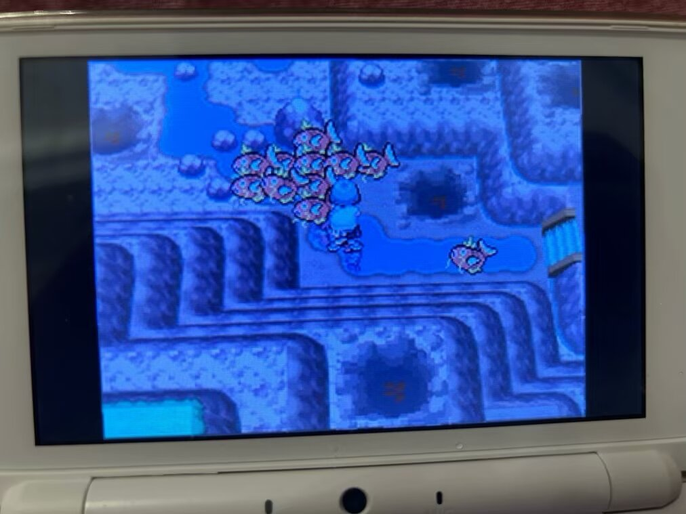
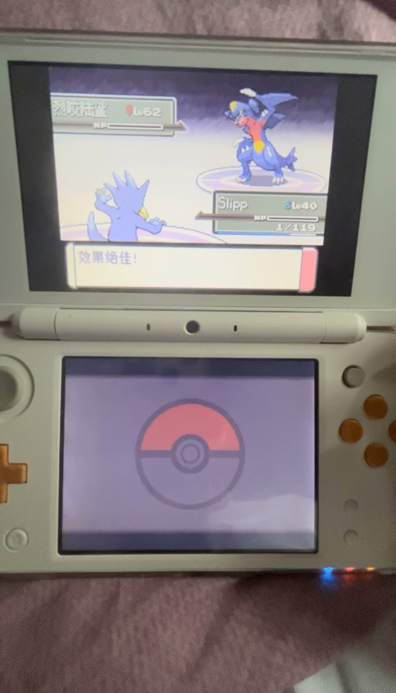
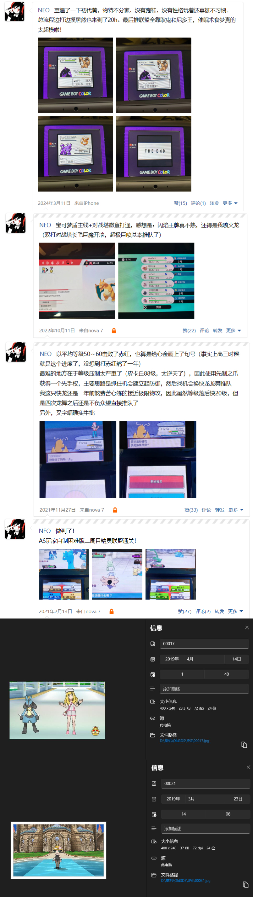

暑假，还是本科毕业的暑假。按惯例讲，总是要启动些什么游戏的。翻了翻宝可梦系列，看了下摆烂的 GF 在 NS 平台最新的重置版还是那个“好评如潮”的珍钻重置。想了想还是重返 NDS 吧，于是启动了宝可梦白金进行重温。
白金大约可以算是我的宝可梦系列入坑作（因为我记不清绿宝石和白金到底哪个算严格意义上的先解除了）。说起我和宝可梦的故事，也许不可避免地还是得从赛尔号讲起——我们这代人的童年充斥着淘米游戏。当时很多我这一代的小孩对宝可梦的理解可能还是电视上播放的无印动画。
这时我的一个发小（下文称之为小H）第一次带我接触了在 PC 端用模拟器运行的宝可梦游戏。我的印象里他家的经济条件一直都比较好，然后我和另一个同学经常会去他家串门。由于知道我们玩赛尔号，他便给我们安利了一款”类赛尔号游戏“（现在想想有点倒反天罡了）。那时候看他用模拟器玩的正是白金，开的是窗口化，并且由于 NDS 模拟还需要显示上下双屏，导致整个画面小小的。但是我仍然被这个新奇的游戏吸引了，一个原因是他独特的像素风格，在当时的我看起来就像 4399 上的炸弹人游戏一样的移动方式；另一个原因是他的双屏风格，下屏是一个巨大的宝可表，显示着当前的时间。令我印象最深的是当时已经是晚上了，游戏里的昼夜系统也显示着夜晚，这给我一种前所未有的代入感。
在如此看小H玩了几次后，我也心痒难耐，去当时的某个游戏盒一口气下了绿宝石和白金——因为当时我并没有问清楚他玩的是哪个版本，所以做了几次尝试。绿宝石在我玩了一会儿后发现没有那个吸引我的双屏设定，便被我搁置了，然后便是我年少时期的第一次白金之旅。当时白金搭配的是一个白色三角的NDS模拟器（现在才知道是no gba模拟器），下屏那个大大的宝可表时常提醒我：别玩了！下午该上课了。
现在想想，为什么《宝可梦：白金》在小时候能给我带来如此震撼的体验，以至于在我心中留下了如此难以磨灭的记忆呢？像最经典的”毁坏的世界“（民间称之为反转世界）就不用说了，小学生哪经得起这样的冲击啊。除开一些非常突出的长板，在细节方面，我必须得夸一下它的地图设计。
神奥地区
在《白金》中，主角的冒险历程和其他宝可梦系列并无太大区别，在妈妈送别的目光下从家所在的小镇（双叶镇）出发，途径各种城市、雪山、大海、山洞，最后挑战精灵联盟成为冠军。但是神奥地区，正如其名，为了凸显它富有神话气息的地域特色，特地将全图最高的山——天冠山置于地图中间，这样地图就天然被分隔为左右两块。在主线过程中，主角很早就需要横穿天冠山来到另一边冒险，但是这时并不能登上这座山，导致心中一直留有悬念，加上沿途不少居民的对话文本中都会给这座山附加背景故事，一下就将游戏故事的厚度立住了，这其实和”世界树“差不多感觉，就是让整个图有个焦点所在。后期的神兽剧情也没有辜负众望，成功让天冠山B格拉满，而且迷宫式的地图设计让这座山总有种爬不完的感觉，不知道以前大家有没有看过关于天冠山的一些都市传说。
此外，三湖的设计也是一绝，特别是家门口的立志湖，在后来的宝可梦作品中我很少看到有类似的地图设计了。它的聪明之处在于，和天冠山类似地，在游戏很前期就让你接触一个充满神秘感的地方，但此时并不能访问，这种伏笔式的设计会让你更有动力玩下去。同时三个湖分离在地图的三角，刚好是被天冠山隔开的两边以及最北边，这样主角在冒险时就能阶段性地遇到一个神湖。记得以前看过任天堂的游戏设计思路，说到他们非常喜欢”3“这个数字，同样的事情让玩家做 3 次是最好的——2 次太少，4 次太多，这也是塞尔达里很多 BOSS 一般都是击晕三次的原因。
再者，最北边的雪峰市也是让冒险更加立体的设计。小时候家里没有热水器，我洗澡都需要去一个洗澡房，冬天洗完就要围着浴巾顶着冷风走回来。在走回来的过程中，冷，并且一般我是晚上洗，有种油然而生的孤独感；而当走到家门口时，微黄的灯光和早已开好的暖气会让我立刻感到有种回家了的感觉。不过相比后者，我反而有些病态地贪恋前者走在路上的那种又冷、又有点孤独的感觉，现在想想，或许可以把这称之为一种”冒险感“，你独自一人，走在地图的一个很边缘的地方，眼前是苍茫茫的路，指南针有点失去方向，这种冒险的刺激感，《白金》就让年少时还没玩到各种 3A 的大作的我体验到了。在神奥的游戏中期，你需要前往地图最北边的雪峰市，可以看到通往雪峰市的只有一条长长的道路（216道路 - 217道路），这种孤身通往世界尽头的设计真的会让人激动不已。
最后，也许赛尔号也得占一份功劳，因为以前刚开始游玩的很多新鲜感都是在和赛尔号对比中带来的，比如可以给宝可梦起昵称（这还是我告诉小H的，他还不知道呢），独具特色的双屏设计，草丛遇怪（赛尔号众所周知是明雷。不过宝可梦现在也变成明雷了，难道赛尔号早已经预料到了一切？），秘传学习机，天气设定等等，当时我最喜欢的就是在只玩过赛尔号的同学面前夸夸其谈，也不知道人家到底有没有当回事。
而久违地再次看到骑拉帝纳出现在标题界面，按下 start 键，我又一次踏上这熟悉又陌生的神奥之旅。一切仿佛都没变，但好像又都变了。以前没抓到的地龙，我终于知道该去哪抓了（迷幻洞窟，就在自行车道视野看不见的地方）。游玩设备也从 PC 模拟器变成了 3DS 掌机。
但明明是同一款游戏，再度游玩时，却硬是让我生出一种物是人非之感。也许是因为我用了官译 ROM（以前使用的是”口袋妖怪“版本的 ROM），有一些译名差别，例如：殿元山 - 天冠山，神事湖 - 立志湖，英知湖 - 睿智湖，其中右侧为官译，但由于童年滤镜，我还是喜欢左边的民间译名，尽管经过一番查证后发现很多是因为早期汉化组水平太次译错了（比如看错假名之类的错误）。又也许，是因为我知道的太多，导致未知带来的神秘感已经烟消云散了。神秘感是游玩白金一个很重要的体验，因此也许这游戏就压根不适合二周目游玩。
我仍然被一些名场面的演出效果震撼到了，例如最出名的，在小学惹得我惊叫的破碎世界与鬼龙的登场。
鬼龙骑拉帝纳出场
以及在银河队剧情中，赤日为了捕获三圣菇，抽干三湖。当时的我虽然是晚入坑的，但是打得比较勤，后续进度反超了小H。以至于我玩到这里时，我忍不住和他剧透了，还叫他有什么没抓的湖里的宝可梦赶紧抓一下，后面可能绝版了。现在想想，这也是这种改变地图式的演出的魅力所在吧。
被抽干的湖，到处都是蹦跶的鲤鱼王
然而，遗憾的是，在地图方面的神秘感我已经完全失去了。我知道天冠山本质不过是一个几层的迷宫，三湖就是抓三圣菇的地方，甚至连竹兰姐的大杀器地龙我都准备好对策来对付了。（题外话：为了挑战低等级过竹兰，我采用了戏法空间+冰系招式来确保击杀地龙。如果感兴趣的朋友们可以看一下我特地录制的实况视频）
哥达鸭空间下击杀地龙
某种意义上，我小时候心中的那个神秘的天冠山，已经倒了。
其实作为一个喜欢怀旧、二刷小时候玩过的游戏的人，我经常会经历这样的感觉。例如小时候同样给我留下很深印象的《枫之谷DS》，在我高中玩完后，也让我有种好像有什么内容小时候玩到了、长大后没玩到的感觉。我一直记得这游戏有一个主角挚友被色诱（？）然后反水的剧情，但是实际玩过之后好像和小时候的记忆有点差别。需要澄清的是，这种前后的落差感并不是游戏本身的问题，单纯是不同时期的个体由于个人阅历、感知能力等等的差异以及初见和二刷之间产生的体验上的区别罢了。我写下这篇文章，也只是想试图捕捉下这种熟悉的感觉。我们总是会一些体验、感觉转瞬即逝，因没法及时记录下而感到遗憾，但又往往足够幸运，得以再次体验到它，然后逐渐能够把握住机会将它们写下来。其实我想，这也是一些诗词中的千古绝句的可贵之处，它们用最少的文字刻画出了千古以来多少人共同产生过的某些“感觉“。
7月份的时候，我回了趟我的初中母校，只是一个小镇上的公立中学。故地重游，感觉正如二刷换了官译的白金rom一样，熟悉夹杂着陌生。在这些求学的岁月中，我就像从家里出发一路冒险到天之彼端的雪峰市英知湖畔的主角，而回到以前的初中，看着因为放了暑假而空荡荡的校园，我就像从英知湖开飞翔回到神事湖的小光一样，茫然四顾。然而即使是时光咆哮也无法让人回到过去，只能打150伤害并暂停一回合。人脑的怀旧系统，也许只是对不确定未来的自我防护机制。所以啊，怀旧这种事，和饮酒也挺像的。偶尔品一番，令人感慨万分，而若是贪图上文中的”感觉“而酗酒的话，对身体便不是那么好了。天冠山还是让它倒了罢。
后记
我经常习惯给不同的社媒分配不同类别的发布内容，比如小红书大多发布旅游和美食、朋友圈更多发布现实生活、知乎发布学术内容，而 QQ 空间我的习惯比较神秘，往往是在通关游戏时候会附一篇说说。
这篇文章也是扩写自《白金》重温通关后的说说。在发布前，我看了一下空间的宝可梦相关内容，发现自己已经发了好多次PM系列通关的记录说说了。想起我的一个同学每到新年第一天，都会把这一年的照片拼成长截图发一篇朋友圈——我发现这种串点成线、聚瞬间为回忆的长截图非常能够戳到我。于是我也给贯穿我本科生涯的 PM 之旅弄了一个长截图。就以小时候看到的、给我留下很深印象的百度口袋妖怪吧的简介做个结吧。
“——我们的梦想永远不会沉睡。”
